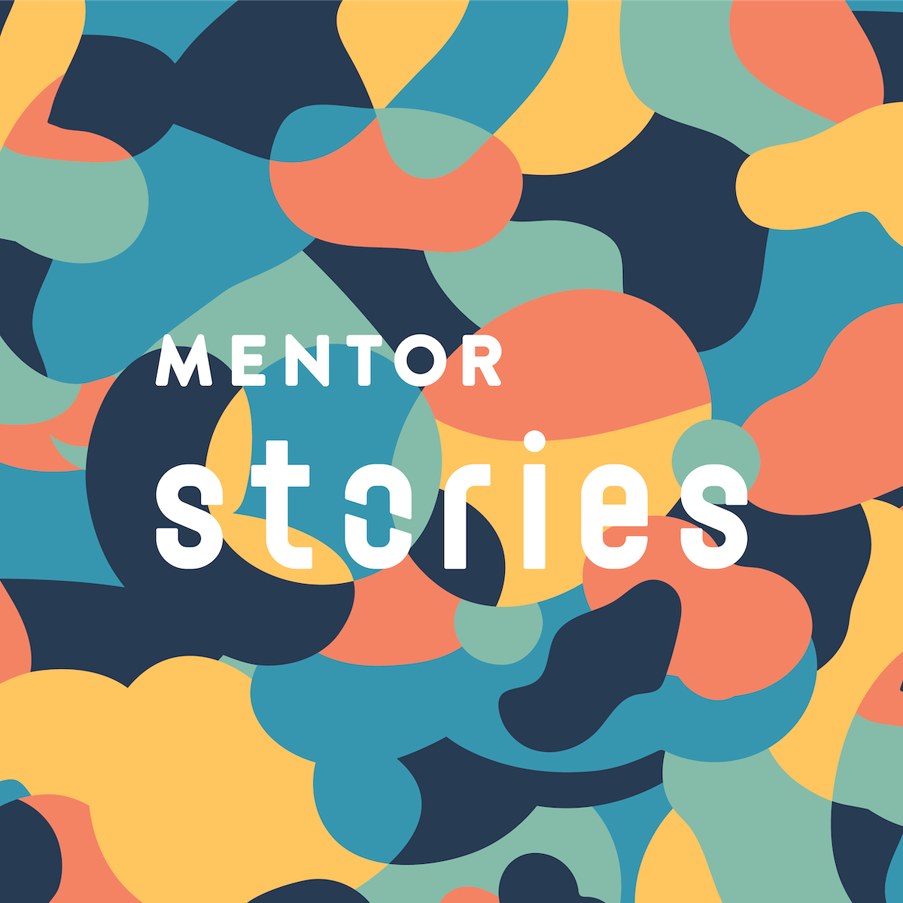

Mentor Stories
What is Mentor Stories and why does it exist?
Mentor Stories is a mentorship scheme launched in 2020 to nurture, support and inspire the next generation of COOs.
It was born out of a desire to help others in their operations careers, as well as to increase future diversity in senior operations roles in tech, as we recognise that there is a shortage of women, minority genders, LGBTQIA+ and people belonging to underrepresented ethnic groups in tech.
Info for Mentees
I’m interested in applying as a mentee. How does it work?
If you are currently pursuing or are interested in getting into a career in operations and/or tech, you are eligible to apply.
We particularly welcome applications from underrepresented groups in tech as outlined above.
This is a great way to learn from those who are a few steps ahead of you in your career. To get an outside viewpoint on the challenges you’re facing in your role, and generally learn from someone else’s experience having been through similar things before.
How will you match me with a mentor?
When you apply to the scheme, we ask you a series of questions to get to know you better. If we have someone who fits what you’re looking for, we’ll introduce you together, and you’ll meet three times over three months.
Will I definitely get a mentor?
We currently have more mentee applications than mentors, so we may not find you a mentor right away.
New intros are made at the start of every quarter. We’ll be in touch even if we haven’t found you a mentor to keep you informed.
You can increase your chances of being matched with a mentor by providing as much info as you can about what you’re looking for in your application.
Does it cost anything?
This mentorship scheme is currently free.
Info for Mentors
I’m interested in volunteering my time as a mentor. How does it work?
As a mentor, this is a fantastic opportunity to give back to the incredible talent coming up behind us. We ask all mentors to take on up to two mentees, where at least one mentee would be from an underrepresented group in tech.
This is a real and tangible way you can impact tech for the better, helping others on their paths, and hopefully inspiring a wider range of people to carve out a career in ops and tech.
Am I eligible to be a mentor?
Mentors are eligible once they have 2+ years in senior leadership experience in a fast-growth or VC backed tech business. The more experience you have, the better, as many of our mentees have 5+ years of leadership experience. If you’re already a senior leader, it’s ok to apply as both a mentor and a mentee!
How do I prep for the sessions?
To be respectful of your time, your mentees will be asked to take the lead on finding the time for the session, and prep for it by sending you the topics they’d like to discuss in advance.
How much time is expected?
Mentors need to be able to commit to two hours per month (one hour per mentee), for three months to participate in the scheme.
Will I get paid?
Mentors volunteer their time for free.
Partnerships
We are currently engaged in conversations with organisations already supporting people wanting to get into tech or progress their careers in tech, to offer mentors to their programmes.
If you’d like to discuss a partnership, we’d love to hear from you. You can reach us at mentorstories [at] googlegroups [dot] com
Other FAQ
Who runs it?
Co-founded by Jess Ruben, Kelsey Traher & Charlene Chen, it is now run by Kelsey Traher, Charlene Chen & Aušrinė Keršanskaitė. You can reach us at mentorstories [at] googlegroups [dot] com
How often are matches made and how long is it for?
New intros are made between well-matched mentors and mentees at the start of every quarter.
Each mentorship relationship runs for 3 months. Mentors and mentees are encouraged to meet monthly for 1 hour for three months.